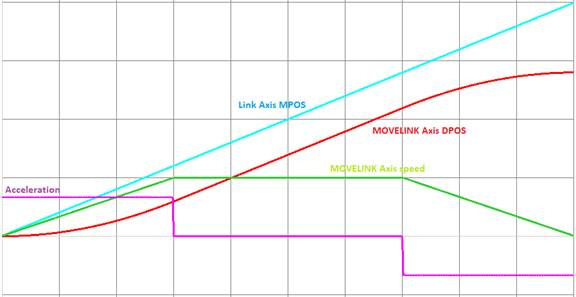
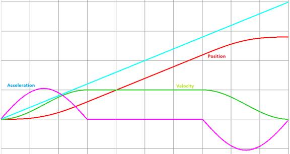
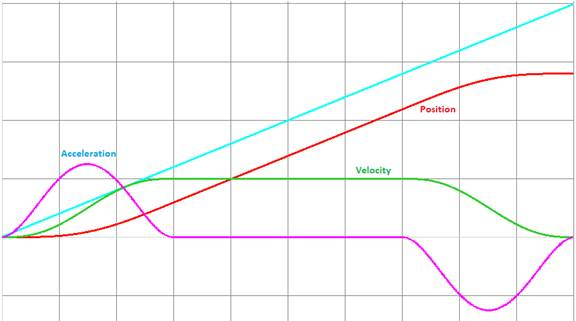
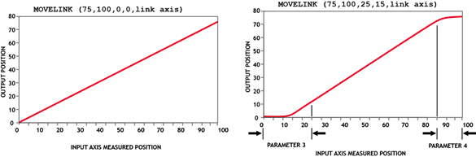
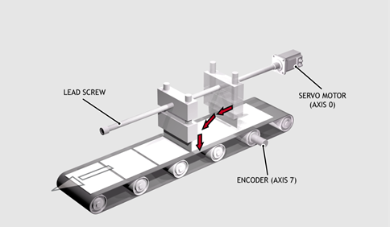
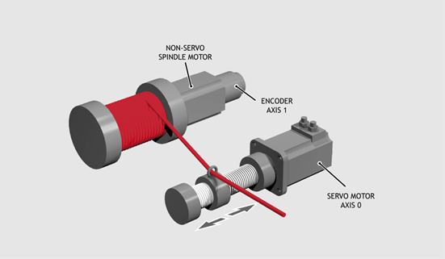
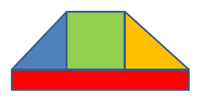

Axis Command
MOVELINK (distance, link_dist, link_acc, link_dec, link_axis[, link_options[, link_pos[, base_dist]]]).
ML()
The linked move command is designed for controlling movements such as:
The motion consists of a linear movement with separately variable acceleration and deceleration phases linked via a software gearbox to the MEASURED position ( MPOS ) of another axis. The command uses the BASE and AXIS , and unit conversion factors in a similar way to other move commands.
The “link” axis may move in either direction to drive the output motion. The link distances specified are always positive.

Standard Trapezoidal profile

Sinusoidal S-Curve (Bit 4 = 1 and Bits 10 & 11 = 0)

Power 5 polynomial S-Curve (Bit 4 = 1 and Bits 10 & 11 = 3)
Parameters:
|
distance: |
incremental distance in user units to be moved on the current base axis, as a result of the measured movement on the “input” axis which drives the move. |
|
|
link dist: |
positive incremental distance in user units which is required to be measured on the “link” axis to result in the motion on the base axis. |
|
|
link acc: |
positive incremental distance in user units on the input axis over which the base axis accelerates. |
|
|
link dec: |
positive incremental distance in user units on the input axis over which the base axis decelerates. |
|
|
link axis: |
Specifies the axis to “link” to. It should be set to a value between 0 and the number of available axes. |
|
|
link_options: |
Bit value options to customise how MOVELINK operates |
|
|
Bit 0 |
Link commences exactly when registration event MARK occurs on link axis |
|
|
Bit 1 |
Link commences at an absolute position on link axis (see link_pos for start position) |
|
|
Bit 2 |
MOVELINK repeats automatically and bi-directionally when this bit is set. (This mode can be cleared by setting bit 1 of the REP_OPTION axis parameter) |
|
|
Bit 3 |
Reserved (see CAMBOX) |
|
|
Bit 4 |
If this bit is set the MOVELINK acceleration and deceleration phases are constructed using an curved speed profile rather than a trapezoidal speed profile. The curve type to use is specified in bits 10…12. |
|
|
Bit 5 |
Link is only active during a positive move on the link axis |
|
|
Bit 6 |
Reserved |
|
|
Bit 7 |
Reserved (see CAMBOX) |
|
|
Bit 8 |
Link commences exactly when registration event MARKB occurs on link axis |
|
|
Bit 9 |
Link commences exactly when registration event R_MARK occurs on link axis. (see link_pos for channel number) |
|
|
Bits 10…12 |
S-Ramp mode selection for use when bit 4 is set. Figure shows peak acceleration compared to linear ramp. Contains a 3-bit integer value that represents the type of curve for the excitation phase: 0 - SINE speed Profile (1.55) 1 - Power 9 polynomial speed profile (2.42) 2 - Power 7 polynomial speed profile (2.16)
3 - Power 5 polynomial speed
profile (1.86)
|
|
|
Bit 13 |
Slave axis follows master axis DPOS (otherwise MPOS) |
|
|
|
Bit 14 |
Link is active during positive movement from a threshold. The threshold is updated to the highest positive value. |
|
link_pos: |
link_option bit 1 - the absolute position on the link axis in user UNITS where the MOVELINK is to be start. link_option bit 9 – the registration channel to start the movement on |
|
|
base_dist |
Firmware V2.0253 onwards. The “base distance” is the distance that is to be travelled at the base speed and is part of the total first “distance” parameter. See Examples 4 and 5 below. MOVELINK_MODIFY cannot be used when the base distance is in use. |
|
If the sum of parameter 3 and parameter 4 is greater than parameter 2, they are both reduced in proportion until they equal parameter 2.

The link_dist is in the user units of the link axis and should always be specified as a positive distance.
The link options for start (bits 1, 2, 8 and 9) may be combined with the link options for repeat (bits 4 and 8) and direction.
start_pos cannot be at or within one servo period’s worth of movement of the REP_DIST position.
A flying shear cuts a long sheet of paper into cards every 160 m whilst moving at the speed of the material. The shear can travel up to 1.2 m of which 1 m is used in this example. The paper distance is measured by an encoder, the unit conversion factor being set to give units of metres on both axes: (Note that axis 7 is the link axis)

WHILE IN(2) = ON
MOVELINK(0, 150, 0, 0, 7) 'Dwell (no movement) for 150m
MOVELINK(0.3, 0.6, 0.6, 0, 7) 'Accelerate to paper speed
MOVELINK(0.7, 1.0, 0, 0.6, 7) 'Track the paper then decelerate
WAIT LOADED 'Wait until acceleration movelink is finished
OP(8, ON) 'Activate cutter
MOVELINK(-1.0, 8.4, 0.5, 0.5, 7) 'Retract cutter back to start
WAIT LOADED
OP(8, OFF) 'Deactivate cutter at end of outward stroke
WEND
In this program the controller firstly waits for the roll to feed out 150 m in the first line. After this distance the shear accelerates up to match the speed of the paper, moves at the same speed then decelerates to a stop within the 1 m stroke. This movement is specified using two separate MOVELINK commands. This allows the program to wait for the next move buffer to be clear, NTYPE = 0, which indicates that the acceleration phase is complete. Note that the distances on the measurement axis (link distance in each MOVELINK command): 150, 0.8, 1.0 and 8.2 add up to 160 m.
To ensure that speed and positions of the cutter and paper match during the cut process the parameters of the MOVELINK command must be correct: It is normally easiest to consider the acceleration, constant speed and deceleration phases separately then combine them as required:
In an acceleration phase to a matching speed the link distance should be twice the movement distance. The acceleration phase could therefore be specified alone as:
MOVELINK(0.3, 0.6, 0.6, 0, 1) 'Move is all accel
In a constant speed phase with matching speed the two axes travel the same distance so distance to move should equal the link distance. The constant speed phase could therefore be specified as:
MOVELINK(0.4, 0.4, 0, 0, 1) 'All constant speed
The deceleration phase is set in this case to match the acceleration:
MOVELINK(0.3, 0.6, 0, 0.6, 1) 'All decel
The movements of each phase could now be added to give the total movement.
MOVELINK(1, 1.6, 0.6, 0.6, 1) 'Same as 3 moves above
But in the example above, the acceleration phase is kept separate:
MOVELINK(0.3, 0.6, 0.6, 0, 1)
MOVELINK(0.7, 1.0, 0, 0.6, 1)
This allows the output to be switched on at the end of the acceleration phase.
MOVELINK can be used to create an exact ratio gearbox between two axes. Suppose it is required to create gearbox link of 4000 / 3072. This ratio is inexact (1.30208333) and if entered into a CONNECT command the axes will slowly creep out of synchronisation. Setting the “link option” to 4 allows a continuously repeating MOVELINK to eliminate this problem:
MOVELINK(4000, 3072, 0, 0, linkaxis, 4)
In this example the unit conversion factors UNITS are set so that the pay-out movements are in mm and the spindle position is measured in revolutions. The pay-out eye therefore moves 50 mm over 25 revolutions of the spindle with the command:
MOVELINK(50, 25, 0, 0, linkax)
If it were desired to accelerate up over the first spindle revolution and decelerate over the final 3 the command would be

MOVELINK(50, 25, 1, 3, linkax)
OP(motor, ON) 'Switch spindle motor on
FOR layer = 1 TO 10
MOVELINK(50, 25, 0, 0, 1)
MOVELINK(-50, 25, 0, 0, 1)
NEXT layer
WAIT IDLE
OP(motor, OFF)
Add a MOVELINK profile on top of a constant ratio so that the MOVELINK starts and ends at that ratio and not at zero.

The “base distance” is the distance that is to be travelled at the base speed and is part of the total first “distance” parameter. So, for example, if the distance required for the blue, green and yellow sections above was 2000 and the “base distance” was 800 the MOVELINK command might be:
MOVELINK(2800, link_dist, l_acc, l_dec, l_axis, 0, 0, 800)
The “link options” and “link pos” 6 th and 7 th parameters MUST be present. If you don’t need these options just set them to zero.
'Starting at a base ratio of 1, increase the slave speed
'to cause it to advance by 110 mm
'base ratio is 40:40
'total slave distance = 110 + 40
'total link distance on master
axis = 110 + ((50+50)/2) + 40
MOVELINK
(150, 200, 50, 50, 2, 16, 0, 40) 'Bit set in option to use S
curve
Profiles such as this one cannot be constructed using the standard MOVELINK without the base distance.
Using the base speed extension function it can be constructed from 3 MOVELINK commands which will be merged together automatically by the Motion Coordinator.
MOVELINK
(
200
,
250
,
100
,
0
,
2
,
16
) 'Accel and
const speed(blue and green)
MOVELINK
(
60
,
90
,
0
,
90
,
2
,
16
,
0
,
30
) '1st deceleration (orange and red)
MOVELINK
(
110
,
360
,
0
,
60
,
2
,
16
) 'Second const speed and 2nd decel
The first constant speed part has a ratio of 1:1.
The first decel goes down to a ratio of 1:3.
The final constant speed part has the ratio 1:3 and then decel to stopped.
Using the power 5 polynomial feature to provide reduced Jerk during acceleration and deceleration. The example uses a link distance of 200 mm and applies 30% to accel, 40% to synchronised motion and 30% to deceleration. Total movement in the MOVELINK axis is 140 mm.
'Alternate S ramp modes (all need options bit 4 ON)
'
'0 - SIN speed Profile (1.55)
'1 - Power 9 polynomial speed (2.42)
'2 - Power 7 polynomial speed (2.16)
'3 - Power 5 polynomial speed (1.86)
'
'The higher polynomials give a smoother motion at the price of higher peak
'The number in brackets is the peak acceleration vs constant accel (BIT 4 = 0)
'
'Use "s_mode" = 3 for general use case
s_mode =
1
options
.4
=
ON
options
.10
= s_mode
.0
options
.11
= s_mode
.1
'Input link length and fraction that is in sync:
linklen =
200
const_frac =
0.4
adist = (
1
- const_frac) * linklen *
0.5
distance = (linklen * const_frac) + adist
MOVELINK
(distance, linklen, adist, adist,
1
, options)